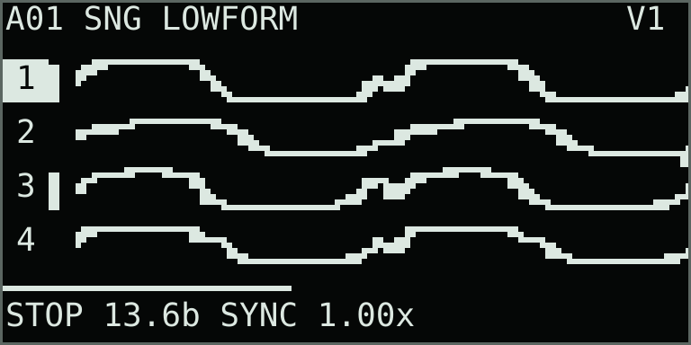
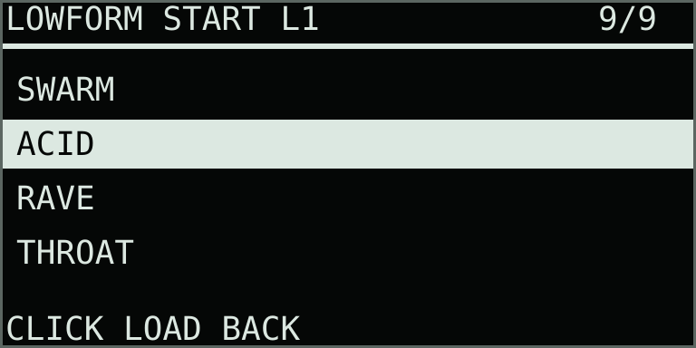
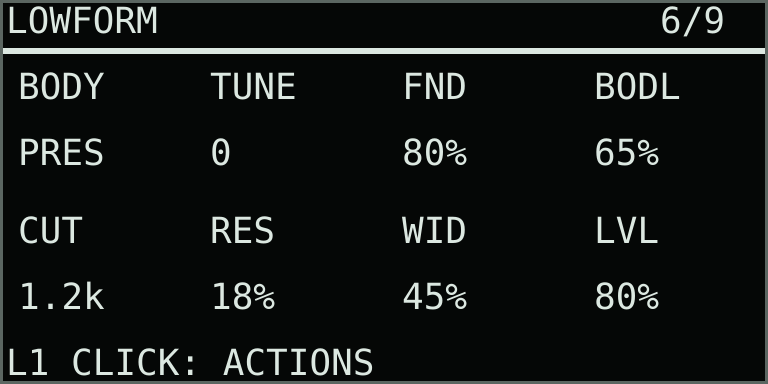
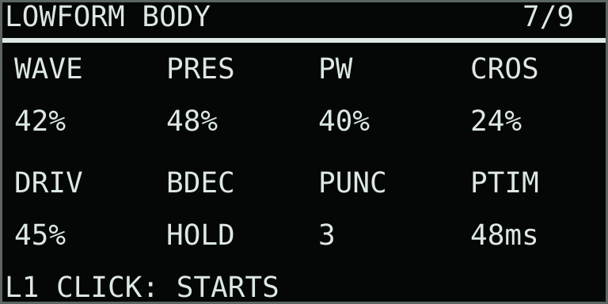
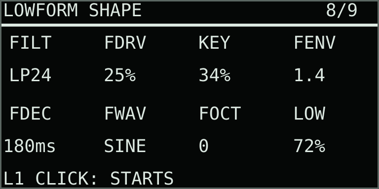
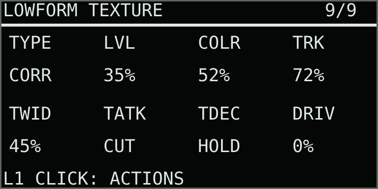

Playback engine 22 of 22
LOWFORM
Build bass and lead sounds from a centred Foundation, a Harmonic Body and an optional Texture layer. Four independent patches can be blended with stack scanning.
Play and edit
Choose LOWFORM on ENGINE. Track 1–4 selects the patch to edit; note pads and external notes set pitch. The main view shows live scopes. Loaded samples remain available to sample engines.

Set FND and BODL for low weight and body character. Select BODY, then use the context-labelled controls on Lowform Body. Choose a Texture TYPE and raise its LVL for upper detail. Use the normal Amp Envelope, Pads & Scale, Mono/Legato and gain controls for note playing.
Click the main encoder on a Lowform sound page for PRESSURE, SWARM, ACID, RAVE, THROAT or SYNC starting sounds. Turn to select, click to apply, or Back to cancel. Starting sounds replace the selected patch while preserving LVL and WID. Undo restores it. Starting sounds cannot be applied while holding a Sequence trig.

Stack scanning blends patch sounds. Sequence uses its assigned patch without scanning. POS, FLD, SPD, JOIN, PADS, VARI and trig POS show unavailable squares because Lowform generates audio. Sequence DUR and Seq Amp work as usual.
Parameter pages
Knobs 1–4 form the top row; 5–8 form the bottom row. Squares mark controls that have no effect with the current settings.
LOWFORM

| Knob | Display | Range | What it controls |
|---|---|---|---|
| 1 | BODY | PRESS / SWARM / ACID / RAVE / THROAT / SYNC | Lowform Body. Choose Pressure, Swarm, Acid, Rave, Throat or Sync while keeping the other controls. Click the main encoder for complete starting sounds. |
| 2 | TUNE | -48–48 st | Lowform Transpose. Transpose the played note in semitones. |
| 3 | FND | 0–100 % | Foundation Level. Level of the centred Foundation oscillator. |
| 4 | BODL | 0–100 % | Body Level. Level of the Harmonic Body. |
| 5 | CUT | 20–18000 Hz | Filter Cutoff. Common filter cutoff and Acid ladder reference. It still controls Acid when FILT is OFF. |
| 6 | RES | 0–95 % | Filter Resonance. Common filter resonance; it also contributes to Acid ladder resonance. |
| 7 | WID | 0–100 % | Lowform Stereo Width. Patch stereo width after the sound layers. Zero gives mono. |
| 8 | LVL | 0–100 % | Lowform Level. Patch level before the part mixer. |
LOWFORM BODY

| Knob | Display | Range | What it controls |
|---|---|---|---|
| 1 | A (body label) | 0–100 % | Body Control A. Body-specific control; see the table below. |
| 2 | B (body label) | 0–100 % | Body Control B. Body-specific control; see the table below. |
| 3 | C (body label) | 0–100 % | Body Control C. Body-specific control; see the table below. |
| 4 | D (body label) | 0–100 % | Body Control D. Body-specific control; see the table below. |
| 5 | E (body label) | 0–100 % | Body Control E. Body-specific control; see the table below. |
| 6 | BDEC | 20–12000 ms | Body Decay. Body decay to a quiet tail. The 12000 ms endpoint displays HOLD. The common Amp Envelope still controls note release. |
| 7 | PUNC | -24–48 st | Pitch Punch. Initial pitch offset that decays toward the played note. |
| 8 | PTIM | 1–1000 ms | Pitch Punch Time. Pitch-punch decay time. Requires nonzero PUNC. |
LOWFORM SHAPE

| Knob | Display | Range | What it controls |
|---|---|---|---|
| 1 | FILT | OFF / LP12 / LP24 / BP / HP / NOTCH | Filter Type. Common filter: OFF, LP12, LP24, band-pass, high-pass or notch. Acid also has its body ladder. |
| 2 | FDRV | 0–100 % | Filter Drive. Drive into the common filter and Acid ladder. |
| 3 | KEY | -100–100 % | Filter Key Track. Keyboard tracking of cutoff; negative settings reverse the direction. |
| 4 | FENV | -8–8 oct | Filter Envelope. Bipolar filter-envelope depth in octaves. |
| 5 | FDEC | 5–4000 ms | Filter Envelope Decay. Filter-envelope decay. Requires nonzero FENV. |
| 6 | FWAV | SINE / TRI / ROUND | Foundation Wave. Sine, band-limited triangle or rounded sine Foundation. Requires FND above zero. |
| 7 | FOCT | -1–0 | Foundation Octave. Foundation at the played octave or one octave below. Body pitch is unchanged. |
| 8 | LOW | 0–100 % | Foundation Low Return. Restore the centred Foundation below about 118 Hz after filtering and overload. Requires FND above zero. |
LOWFORM TEXTURE

| Knob | Display | Range | What it controls |
|---|---|---|---|
| 1 | TYPE | OFF / NOISE / CORR / RING / WIRE | Texture Type. OFF, filtered NOISE, CORR sample-and-hold, body RING modulation or cross-related WIRE. |
| 2 | LVL | 0–100 % | Texture Level. Texture layer level. |
| 3 | COLR | 0–100 % | Texture Colour. Texture brightness, held-noise rate or modulation ratio, depending on TYPE. |
| 4 | TRK | 0–100 % | Texture Pitch Track. Blend free rate and keyboard tracking. Available in CORR and WIRE. |
| 5 | TWID | 0–100 % | Texture Width. Texture stereo width before the overall WID control. |
| 6 | TATK | 0–2000 ms | Texture Attack. Texture fade-in at note onset. Changes affect newly played notes. |
| 7 | TDEC | 20–12000 ms | Texture Decay. Texture decay to a quiet tail. The 12000 ms endpoint displays HOLD. |
| 8 | DRIV | 0–100 % | Lowform Overload. Smoothed soft overload after the filter, before the Foundation low return. Zero keeps a clean path. |
Body controls
These are knobs 1–5 on Lowform Body. Their values run from 0 to 100%; the labels follow BODY. In SYNC, the primary oscillator resets the secondary oscillator at each cycle. RATI sets the secondary frequency relative to the primary.
| Body | Knob 1 / A | Knob 2 / B | Knob 3 / C | Knob 4 / D | Knob 5 / E |
|---|---|---|---|---|---|
| PRESS | WAVE: triangle/saw | PRES: pulse pressure | PW: pulse width, 12–88% | CROS: cross-product | DRIV: body drive |
| SWARM | DRIV: oscillator drive | DETN: detune spread | VOIC: smoothly blend 1–7 oscillators | DRFT: slow detuning | TONE: sine-to-saw brightness |
| ACID | WAVE: saw/pulse | RES: ladder resonance | PW: pulse width, 10–90% | DRIV: ladder drive | CUT: offset, −4 to +4 octaves |
| RAVE | WAVE: triangle/saw/pulse | SUB: octave divider | SMER: short stereo delay movement | NOIS: pre-filter noise | DRIV: parallel drive |
| THROAT | VOWL: A/E/I/O/U progression | SHFT: resonators, −15 to +15 semitones | FOCS: vowel resonance | SRC: glottal character | DRIV: vowel-body drive |
| SYNC | WAVE: secondary oscillator shape | RATI: secondary/primary frequency, 1:1–8:1 | SWP: secondary pitch sweep | DEC: sweep decay, about 15–1200 ms | RING: primary/secondary ring blend |
Clips and modulation
Clips and projects retain all four patches. MIDI and E16 edit the selected patch without changing Move’s editing focus. Hold a Sequence step to lock sound controls; release to return. Curated LFO targets cover body, filter, texture, level and width. TATK acts at note onset and is not an LFO target.
LOW protects the Foundation after filtering and overload. The existing delay, reverb, tape and part/effects routing remain available.